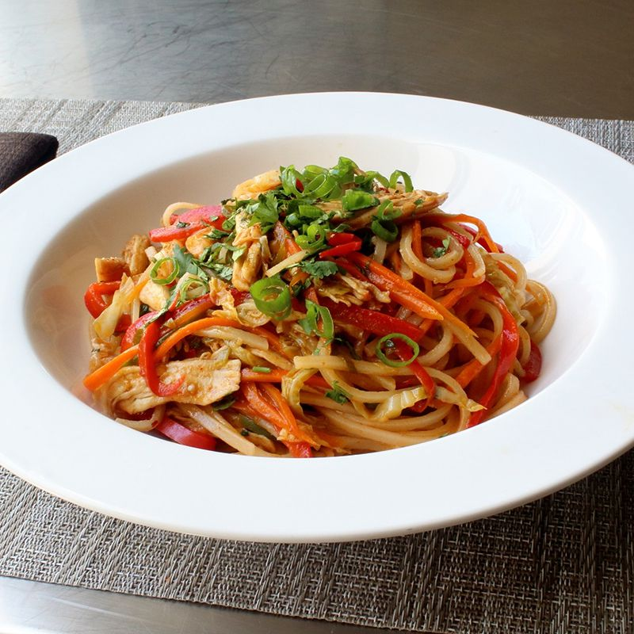

Spicy Chicken Noodles

Description
No matter what recipe they're used in, rice noodles are a proven crowd-pleaser. I think this spicy chicken noodles dish is perfect for using up leftover chicken, assuming it wasn't horribly overcooked in the first place. If you did want to use raw chicken, go ahead and chop it up, and stir-fry it for a minute or two before adding your vegetables.
Vegetables
- 1 large carrot, finely sliced or shredded
- 2 cups shredded green cabbage
- 1 red bell pepper, thinly sliced
- 2 jalapeno pepper, seeded and minced
- ½ cup chopped green onions
- 3 cloves garlic, finely crushed
Sauce
- ½ cup chicken broth
- ¼ cup seasoned rice vinegar
- 1 tablespoon hoisin sauce
- 1 tablespoon soy sauce, plus more to taste
- 1 tablespoon ketchup
- 1 tablespoon brown sugar
- 1 tablespoon sriracha hot sauce, or more to taste
- 1 teaspoon red pepper flakes
Noodles
- 1 (8 ounce) package dried rice noodles
- 1 pinch salt
- 8 ounces cooked chicken breast, torn into bite-size pieces
- 1 tablespoon sesame oil
- 1 tablespoon vegetable oil
- ½ cup freshly chopped cilantro
Steps
- Place carrots, cabbage, bell pepper, jalapeno pepper, green onions, and garlic in a mixing bowl.
- Mix chicken broth, rice vinegar, hoisin sauce, soy sauce, ketchup, brown sugar, sriracha sauce, and red pepper flakes together in a separate mixing bowl.
- Place dry rice noodles in a large mixing bowl. Cover with about 6 cups boiling water; add a pinch of salt. Stir from time to time until noodles are soft, about 10 minutes. Drain; cool with cold water. Drain thoroughly. Transfer to a mixing bowl. Add shredded chicken; drizzle with sesame oil. Toss to coat.
- Heat large skillet over high heat; drizzle in vegetable oil. When oil is hot (almost but not quite smoking), add the vegetable mixture. Cook and stir until vegetables are hot and steamy, 1 or 2 minutes. Pour in sauce; cook and stir over high heat until sauce starts to bubble, about 1 minute. Add noodles and chicken. Cook and stir to blend ingredients and ensure ingredients are hot, about 1 minute. Remove from heat. Add chopped cilantro; stir.